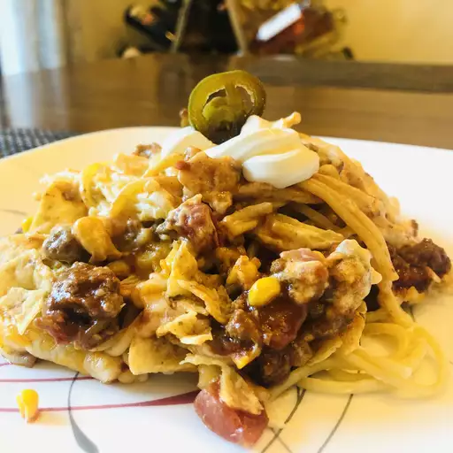

Taco Spaghetti Bake

Description
A mix of Mexican and Italian flavors that are sure to become a family favourite!
Ingredients
- 1 (8 ounce) package spaghetti
- 1 1/2 pounds ground beef
- 1 (1 ounce) package taco seasoning
- 3/4 cup water
- 1 (15 ounce) can corn, drained
- 1 (8 ounce) jar taco sauce
- 1 (10.75) can condensed cream of chicken soup
- 1 (8 ounce) container sour cream
- 2 cups shredded Cheddar cheese, divided
- 1 cup tortilla chips, crushed
Directions
- Preheat the oven to 350 degrees F (175 degrees C). Lightly grease a large baking dish.
- Bring a large pot of lightly salted water to a boil. Cook spaghetti in boiing water, stirring occasionally, until cooked through but firm to the bite, about 12 minutes.Drain and transfer pasta to prepared baking dish.
- Heat a large skillet over medium-high heat. Cook and stir beef in the hot skillet until browned and crumbly, 5 to 7 minutes;drain and discard grease. Stir in taco seasoning and water; simmeruntil thickened, about 5 minutes. Add corn and taco sauce; cook and stir until heated through, about 5 minutes more.
- Combine cream of chicken soup, sour cream, and 1 cup Cheddar cheese in a bowl until evenly mixed. Spread mixtureover spaghetti. Spread beef mixture over sour cream mixture and top with remaining 1 cup Cheddar cheese and tortilla chips.
- Bake in the preheated oven until cheese is melted and bubbly, about 30 minutes. Allow to cool for 5 to 10 minutes before serving.